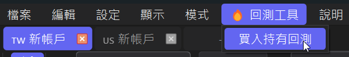
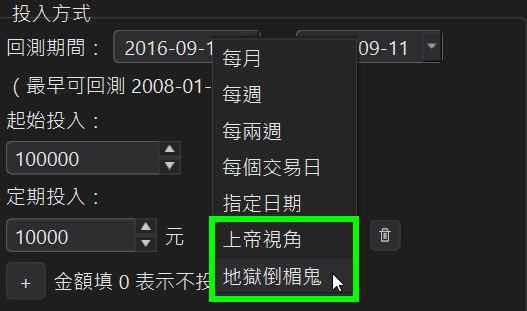
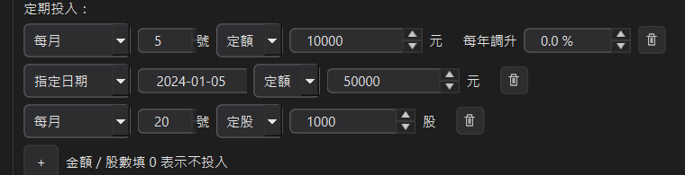
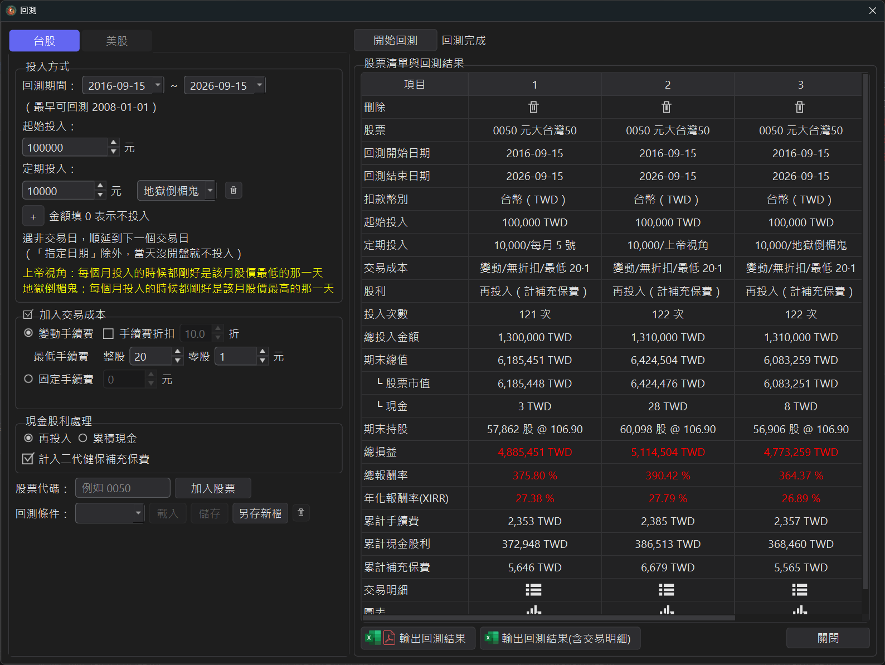
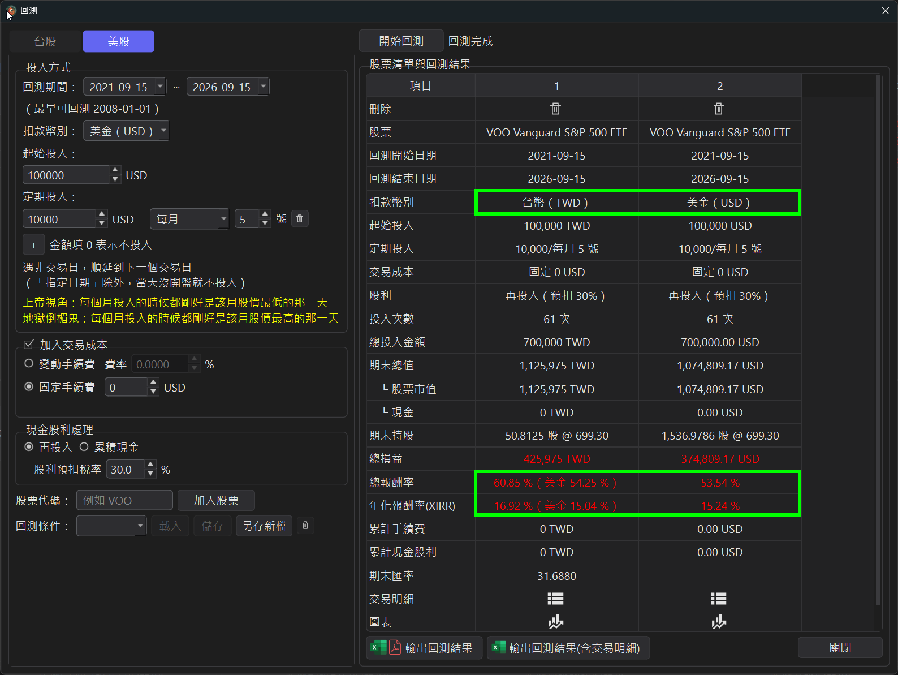
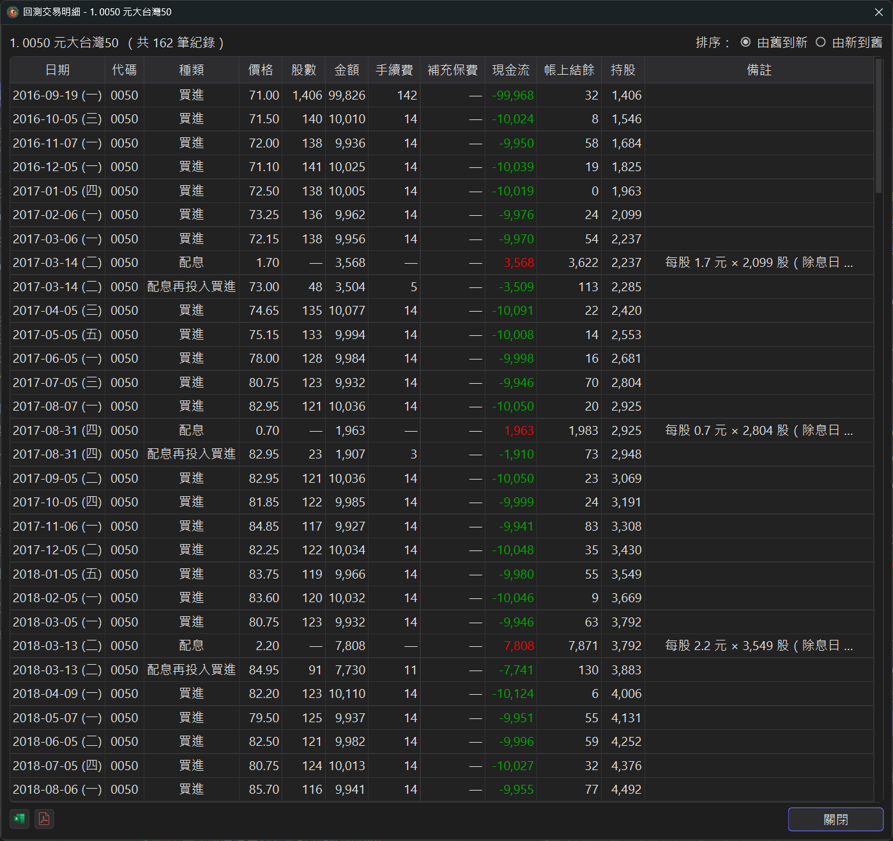
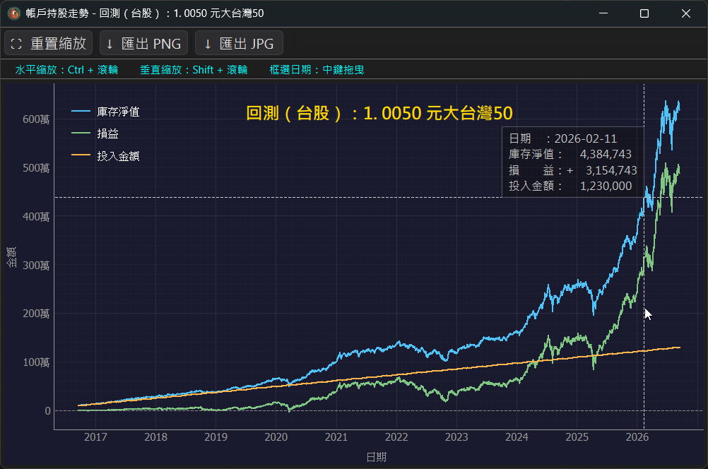

回測工具 v3.5.0 新增
每次看到財經粉專在說每個月定期定額投資 0050 就可以累積多少退休金的時候，你有沒有起心動念想要自己算算看，卻苦無數據？
或者，想找出比 0050 更適合定期定額的股票？
StockKeeper 用真實歷史股價與配息，模擬你如果從某一天開始、用某種方式定期投入，今天的結果會是什麼。
1、從選單開啟
上方選單 🔥 回測工具 → 買入持有回測。

2、設定回測條件
左半邊是條件設定區，主要包含 4 個區塊：
● 市場：上方分頁選台股或美股，兩市場設定項目略有不同（後面會提到差異）。
● 回測期間：起訖日期，最早可到 2008-01-01。
● 起始投入：期初一次投入的金額，例如 100,000 元（也可以設為0元，只靠定期定額投入）。
● 定期投入：從下面 7 種投入方式選一種，再選定額或定股，填金額或股數。同一次回測可以按 + 疊多條規則，例如「每月 5 號 1 萬 + 每月 20 號再買 1,000 股」。
● 加入交易成本：勾起來會納入手續費計算。
└ 台股：變動 / 固定手續費、手續費折扣、整股 / 零股最低手續費。
└ 美股：變動（費率制 %）或固定手續費。
● 現金股利處理：再投入（配息直接買進）或累積現金。
└ 台股：可勾選計入二代健保補充保費（門檻、年度費率會自動套用，KY 股排除）。
└ 美股：可設定股利預扣稅率（預設 30%）。
設定完，填入股票代碼、按加入股票就會把這組策略加到右邊的比較表。按開始回測執行。
3、7 種投入方式
定期投入下拉選單提供 7 種模式，遇非交易日自動順延到下一個交易日（「指定日期」除外，當天沒開盤就不投入）。

● 每月：指定幾號扣款。
● 每週 / 每兩週：指定星期幾扣款。
● 每個交易日：每天都買。
● 指定日期：單次，指定某一天投入。
● 上帝視角：每個月都剛好買在當月最低點。
● 地獄倒楣鬼：每個月都剛好買在當月最高點。
提醒：上帝視角 / 地獄倒楣鬼是事後才知道的價位，用途是給你一組報酬率的上下限對照組—— 不是可執行的策略。
4、定期定額 / 定期定股
每一條定期投入都可以用下拉選單切換定額或定股，同一次回測也可以兩種混用：

● 定期定額：每次投入固定金額，能買幾股就買幾股，沒用完的零頭留到下次一起用。
└ 可設定每年調升比例（例如配合通膨或加薪每年 +3%）：第一年用設定金額，之後以回測開始日為週年，逐年複利調升。
● 定期定股：每次買進固定股數（例如每月 1,000 股），該次投入金額 ＝ 成交金額 ＋ 手續費，會隨股價高低變動。
└ 台股以「股」為單位（可買零股）；美股可填到小數，模擬碎股。
└ 定股不提供每年調升；交易明細中的種類會顯示「定股買進」。
小提醒：定額在股價低時買得多、股價高時買得少；定股則是每次都買一樣多，股價高時要投入更多錢。 把同一檔股票用兩種方式各加一次，就能直接在比較表看出差異。
5、同一張表橫向比較多組策略
回測工具的核心設計：一檔股票一欄，同一檔股票可以用不同投入方式加入多次直接橫向對比。欄位可以拖拉調整順序。
下圖：同一檔 0050，10 年期間分別用「每月 5 號」、「上帝視角」、「地獄倒楣鬼」三種策略跑。可以直接看到年化報酬率的落差（27.38% / 27.79% / 26.89%）。

6、美股：兩種扣款幣別
美股回測時，扣款幣別可以選美金（USD）或台幣（TWD）：
● 選美金扣款：直接用美金買進，回測結果是純美金報酬率。
● 選台幣扣款：程式自動用央行收盤中價把台幣換成美金再買進，結果會同時給你台幣報酬率與美金報酬率，兩者的差就是匯率吃掉（或賺到）多少。
下圖：同一檔 VOO 分別用台幣扣款與美金扣款回測。台幣扣款那一欄的總報酬率 60.85%（美金 54.25%）、年化 16.92%（美金 15.04%），差距就是新台幣兌美金這 5 年的匯率影響。

7、看回測結果
右半邊是結果表，除了一眼看到的績效指標摘要（總損益、總報酬率、年化報酬率 XIRR、期末總值、期末持股、累計手續費、累計現金股利、累計補充保費…），你還可以：
● 點📋 逐筆交易明細：每一筆買進、配息、配息再投入都一列列出，含當時股價、手續費、補充保費、帳上結餘、持股數。若是美股投資用台幣扣款，每筆明細連當日匯率都會列出。

● 點📈 走勢圖表：庫存淨值、損益、投入金額三條線同一張圖，一眼看出你的投入曲線（橘）跟資產成長曲線（藍）什麼時候拉開。

● 底部兩顆按鈕可以把回測結果匯出成 Excel 或 PDF（含 / 不含逐筆明細兩種）。
8、回測條件可存雲端（多組具名設定）
左下角「回測條件」可以把整組設定（含所有股票、投入方式、成本…）用一個名字存起來。同一組條件想試不同股票、或不同組條件切換比較，直接載入就好，不用每次重填。
9、使用前提
● 需以雲端模式登入 —— 歷史股價、配息、匯率資料都來自雲端資料庫，單機模式沒有這些歷史。
● 歷史資料自 2008 年起（最早可回測日 2008-01-01）。
● 上帝視角 / 地獄倒楣鬼是對照組，不是策略：它需要「事後才知道」的當月最低 / 最高點，你在當下不可能達到。用途只是給你的實際策略一組報酬率上下限當參考。
● 匯率採中央銀行收盤中價，未計入銀行換匯的買賣價差（實際換匯會略差一點點）。